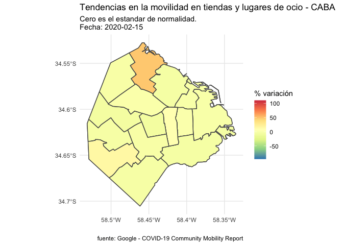
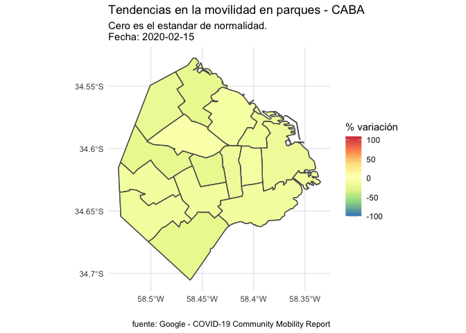
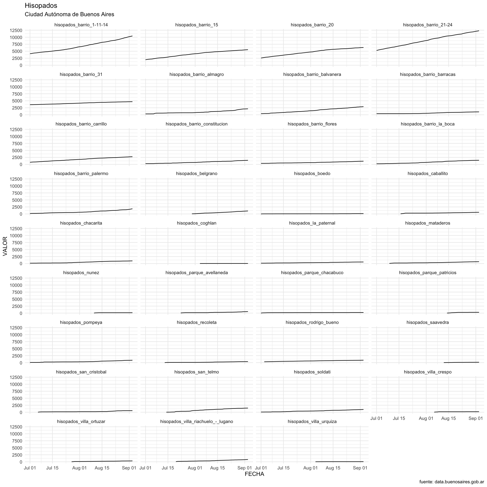

La pandemia en la ciudad, en datos
5/9/2020
1 Introducción
Este trabajo forma parte de la integración de los módulos Introducción a la Ciencia de Datos y Ciencia de Datos Geográfica, del posgrado en Big Data e Inteligencia Territorial de FLACSO Argentina.
El objetivo principal del mismo es mostrar distintos aspectos de la situación generada por el COVID-19 en la Ciudad de Buenos Aires, y tiene como base datos abiertos tanto privados como públicos.
La elección del tema se debe a la relevancia que presenta a nivel local, y a la detección de la necesidad de integrar los datos abiertos de un modo que ayude a entender mejor el impacto de la pandemia en el sistema de salud, en el transporte y la movilidad urbana.
Este análisis intenta responder algunas preguntas, como por ejemplo:
¿Qué datos hay disponibles?
¿Se pueden transformar esos datos en información?
¿Pueden los datos abiertos ayudarnos a entender mejor la realidad?
2 Desarrollo
Los ejes centrales de este trabajo involucran el flujo de transporte público, la movilidad urbana según estimaciones de Google, los datos de salud de la Ciudad en materia de ocupación de camas, números de casos, Unidades Febriles de Emergencia, testeos y una muestra de capturas de tweets geolocalizados en la Ciudad y que abordan temas relacionados a la pandemia y la situación de cuarentena.
2.1 Paquetes
Antes de empezar, los paquetes que se utilizaron durante todo el proceso son:
library(tidyverse)
library(ggmap)
library(lubridate)
#gganimate, para animar gráficos que vamos a hacer con ggplot
library(gganimate)
library(transformr)
library(viridis)
library(hrbrthemes)
library(sf)
library(osmdata)
library(leaflet)
library(knitr)
library(tidyr)
library(rtweet)
library(quanteda)
library(readtext)
library(spacyr)
library(quanteda.textmodels)
library(newsmap)
library(tidytext)
library(igraph)
library(ggraph)
library(stopwords)
library(widyr)También se quitó la notación científica, con esta línea de código:
2.2 Ciudad de Buenos Aires
Según Wikipedia: > Buenos Aires, oficialmente Ciudad Autónoma de Buenos Aires (CABA) o Ciudad de Buenos Aires (tal y como figura en su Constitución), es la capital y ciudad más poblada de la República Argentina. Esta metrópolis es una ciudad autónoma que constituye uno de los 24 distritos, o «jurisdicciones de primer orden», que conforman el país. Tiene sus propios poderes ejecutivo, legislativo y judicial. Está situada en la región centro-este del país, sobre la orilla sur del Río de la Plata, en la región pampeana. La Ciudad de Buenos Aires fue cedida por la provincia de Buenos Aires para que fuera la capital federal del país; pero en virtud de la Constitución Nacional es una ciudad autónoma. Su tejido urbano se asemeja a un abanico que limita al sur, oeste y norte con la lindante Provincia de Buenos Aires y al este con el Río de la Plata. Oficialmente la ciudad se encuentra dividida en 15 comunas que agrupan a 48 barrios.
Ahora, vamos a localizarla en el mapa:
2.3 Movilidad
En este apartado se toman los datos del Google COVID-19 Community Mobility Report. El reporte contiene información sobre la movilidad en la Ciudad por comunas desde el 15 de febrero hasta el 15 de agosto de 2020.
## Reading layer `CABA_comunas' from data source `https://bitsandbricks.github.io/data/CABA_comunas.geojson' using driver `GeoJSON'
## Simple feature collection with 15 features and 4 fields
## geometry type: MULTIPOLYGON
## dimension: XY
## bbox: xmin: -58.53152 ymin: -34.70529 xmax: -58.33514 ymax: -34.52754
## CRS: 4326#movilidad google
movilidad_google <- read.csv("https://www.gstatic.com/covid19/mobility/Global_Mobility_Report.csv?cachebust=56adbfa96dfa23c3")Renombramos la columna comunas
Seleccionamos y filtramos (dentro del dataset de Google) los datos correspondientes a Argentina
Manipulamos los datos para que nos resulten más prácticos
#vemos qué hay dentro de la variable sub_region_1
levels(movilidad_google$sub_region_1)
#filtramos solo la data correspondiente a Buenos Aires
movilidad_google_buenos_aires <- movilidad_google %>% filter(sub_region_1 == "Buenos Aires")
summary(movilidad_google_buenos_aires)
#dejamos fuera las siguientes columnas
movilidad_google_buenos_aires <- select(movilidad_google_buenos_aires, -metro_area, -iso_3166_2_code, -census_fips_code)
#como las comunas en nuestro dataset "comunas" aparecen con números y en el dataset de Google con comuna + número, vamos a renombrar.
comunas$comuna <- (comunas$comuna = case_when(comunas$comuna == 1 ~ "Comuna 1",
comunas$comuna == 2 ~ "Comuna 2",
comunas$comuna == 3 ~ "Comuna 3",
comunas$comuna == 4 ~ "Comuna 4",
comunas$comuna == 5 ~ "Comuna 5",
comunas$comuna == 6 ~ "Comuna 6",
comunas$comuna == 7 ~ "Comuna 7",
comunas$comuna == 8 ~ "Comuna 8",
comunas$comuna == 9 ~ "Comuna 9",
comunas$comuna == 10 ~ "Comuna 10",
comunas$comuna == 11 ~ "Comuna 11",
comunas$comuna == 12 ~ "Comuna 12",
comunas$comuna == 13 ~ "Comuna 13",
comunas$comuna == 14 ~ "Comuna 14",
comunas$comuna == 15 ~ "Comuna 15"))
#dejamos fuera columnas que no nos interesan
comunas <- select(comunas, -barrios, -perimetro, -area)
#renombramos la columna que contiene las comunas para poder crear un nuevo dataset
movilidad_google_buenos_aires <- movilidad_google_buenos_aires %>% rename(comuna = sub_region_2)
#unimos el dataset con la información de movilidad de google con el de comunas para darle atributos geoespaciales
movilidad_comunas <- inner_join(movilidad_google_buenos_aires, comunas, by = "comuna")
#vamos a borrar el _percent_change_from_baseline de las columnas
movilidad_comunas <- movilidad_comunas %>% rename(
retail_and_recreation = retail_and_recreation_percent_change_from_baseline,
grocery_and_pharmacy = grocery_and_pharmacy_percent_change_from_baseline,
parks = parks_percent_change_from_baseline,
transit_stations = transit_stations_percent_change_from_baseline,
workplaces = workplaces_percent_change_from_baseline,
residential = residential_percent_change_from_baseline)
#definimos la columna date como fecha para poder usar los datos como serie temporal
movilidad_comunas$date <- as_date( movilidad_comunas$date)Ahora sí, vamos a los mapas. Los datos de movilidad de Google están determinados por comunas, y acabamos de crear un dataset que a esto le suma la información geo, lo que nos permite llevar todos los datos de movilidad a mapas.
2.3.1 Movilidad en tiendas y lugares de ocio - CABA:
#movilidad en tiendas y lugares de ocio
tiendas_y_ocio <- ggplot(movilidad_comunas) +
geom_sf(data = movilidad_comunas$geometry, aes(fill = movilidad_comunas$retail_and_recreation)) +
transition_time(movilidad_comunas$date) +
scale_fill_distiller(palette = "Spectral") +
labs(title = "Tendencias en la movilidad en tiendas y lugares de ocio - CABA",
subtitle = "Cero es el estandar de normalidad.
Fecha: {(frame_time)}",
x = "",
y = "",
fill = "% variación",
caption = "fuente: Google - COVID-19 Community Mobility Report") +
theme_minimal()
animate(tiendas_y_ocio, fps=1)
2.3.2 Movilidad en supermercados y farmacias
supermercados_y_farmacias <- ggplot(movilidad_comunas) +
geom_sf(data = movilidad_comunas$geometry, aes(fill = movilidad_comunas$grocery_and_pharmacy)) +
transition_time(movilidad_comunas$date) +
scale_fill_distiller(palette = "Spectral") +
labs(title = "Tendencias en la movilidad en supermercados
y farmacias - CABA",
subtitle = "Cero es el estandar de normalidad.
Fecha: {(frame_time)}",
x = "",
y = "",
fill = "% variación",
caption = "fuente: Google - COVID-19 Community Mobility Report") +
theme_minimal()
animate(supermercados_y_farmacias, fps=1)2.3.3 Movilidad en parques
parques <- ggplot(movilidad_comunas) +
geom_sf(data = movilidad_comunas$geometry, aes(fill = movilidad_comunas$parks)) +
transition_time(movilidad_comunas$date) +
scale_fill_distiller(palette = "Spectral") +
labs(title = "Tendencias en la movilidad en parques - CABA",
subtitle = "Cero es el estandar de normalidad.
Fecha: {(frame_time)}",
x = "",
y = "",
fill = "% variación",
caption = "fuente: Google - COVID-19 Community Mobility Report") +
theme_minimal()
animate(parques, fps=1)
2.3.4 Movilidad en estaciones de transporte
estaciones_transporte <- ggplot(movilidad_comunas) +
geom_sf(data = movilidad_comunas$geometry, aes(fill = movilidad_comunas$transit_stations)) +
transition_time(movilidad_comunas$date) +
scale_fill_distiller(palette = "Spectral") +
labs(title = "Tendencias en la movilidad en estaciones de transporte - CABA",
subtitle = "Cero es el estandar de normalidad.
Fecha: {(frame_time)}",
x = "",
y = "",
fill = "% variación",
caption = "fuente: Google - COVID-19 Community Mobility Report") +
theme_minimal()
animate(estaciones_transporte, fps=1)2.3.5 Movilidad en lugares de trabajo
lugares_trabajo <- ggplot(movilidad_comunas) +
geom_sf(data = movilidad_comunas$geometry, aes(fill = movilidad_comunas$workplaces)) +
transition_time(movilidad_comunas$date) +
scale_fill_distiller(palette = "Spectral") +
labs(title = "Tendencias en la movilidad en lugares de trabajo - CABA",
subtitle = "Cero es el estandar de normalidad.
Fecha: {(frame_time)}",
x = "",
y = "",
fill = "% variación",
caption = "fuente: Google - COVID-19 Community Mobility Report") +
theme_minimal()
animate(lugares_trabajo, fps=1)2.3.6 Movilidad en zonas residenciales
#movilidad en zonas residenciales
zonas_residenciales <- ggplot(movilidad_comunas) +
geom_sf(data = movilidad_comunas$geometry, aes(fill = movilidad_comunas$residential)) +
transition_time(movilidad_comunas$date) +
scale_fill_distiller(palette = "Spectral") +
labs(title = "Tendencias en la movilidad en zonas residenciales - CABA",
subtitle = "Cero es el estandar de normalidad.
Fecha: {(frame_time)}",
x = "",
y = "",
fill = "% variación",
caption = "fuente: Google - COVID-19 Community Mobility Report") +
theme_minimal()
animate(zonas_residenciales, fps=1)2.4 COVID-19 en la Ciudad de Buenos Aires: infraestructura, movilidad, operativos y casos
En este apartado, se toman los datos sobre casos de Coronavirus en la Ciudad. El objetivo es mostrar la evolución de casos por distritos (desde el gobierno de la ciudad usan una división distinta a la habitual, por barrios o comunas) que tienen estrecha relación con el operativo DetectAR, cuyos centros se encuentran en distintos puntos de la ciudad.
2.4.1 Operativo DetectAR
Para conocer la distribución de los operativos en la ciudad, vamos a tomar los siguientes datos:
#datos sobre la ubicación de los operativos detectar en la ciudad
detectar <- st_read('https://cdn.buenosaires.gob.ar/datosabiertos/datasets/salud/operativo-detectar/operativo-detectar.geojson')
#comunas_geo
comunas <- st_read('https://bitsandbricks.github.io/data/CABA_comunas.geojson')Llevado a un mapa, la representación es la siguiente:
#extraemos de geometry las coordenadas en x e y (llamadas lat y long)
detectar <- detectar %>% mutate(
lat = unlist(map(detectar$geometry, 1)),long=unlist(map(detectar$geometry,2)))
ggplot() +
geom_sf(data = comunas$geometry) +
geom_point(data = detectar, aes(x = lat, y = long, color = comuna)) +
geom_sf_text(data=comunas, aes(label = comunas), size=2.5, colour = "black") +
labs(title = "Mapa de puntos DetectAR",
subtitle = "Ciudad Autónoma de Buenos Aires",
x = "",
y = "",
caption = "fuente: data.buenosaires.gob.ar",
color = "Se encuentra en:") +
theme_minimal()Como se ve en el mapa, hay cuatro puntos DetectAR en la comuna 4, tres en las comunas 7 y 8, dos en las comunas 1, 2 y 3 y uno en las comunas 2, 5, 6, 9 y 14.
2.4.2 SUBE
A través de la API de transporte del Gobierno de la Ciudad, se puede acceder a los datos de uso de la tarjeta SUBE.
#datos sobre la SUBE
sube <- read.csv('https://cdn.buenosaires.gob.ar/datosabiertos/datasets/transporte/sube/dataset_viajes_sube.csv')
#vamos a ver qué datos hay en el dataset sobre la sube
head(sube)## TIPO_TRANSPORTE DIA PARCIAL CANTIDAD
## 1 Subte 31MAR2020:00:00:00 False 7521
## 2 Subte 01APR2020:00:00:00 False 21178
## 3 Subte 02APR2020:00:00:00 False 20758
## 4 Subte 03APR2020:00:00:00 False 23545
## 5 Subte 04APR2020:00:00:00 False 12184
## 6 Subte 05APR2020:00:00:00 False 6236#los datos que tenemos son: tipo de transporte, el día, la variable parcial y la cantidad de pasajerxs
str(sube)## 'data.frame': 564 obs. of 4 variables:
## $ TIPO_TRANSPORTE: Factor w/ 3 levels "Colectivo","Subte",..: 2 2 2 2 2 2 2 2 2 2 ...
## $ DIA : Factor w/ 188 levels "01APR2020:00:00:00",..: 187 1 8 15 22 29 35 41 47 53 ...
## $ PARCIAL : Factor w/ 2 levels "False","True": 1 1 1 1 1 1 1 1 1 1 ...
## $ CANTIDAD : int 7521 21178 20758 23545 12184 6236 25029 25036 26187 18945 ...#transformamos el formato de las fechas a día-mes-año-horas:minutos:segundos
sube <- sube %>% mutate(DIA = dmy_hms(DIA))
#ahora vamos a cambiar los nombres para que la variable DIA (que contiene las fechas) se llame FECHA
sube$FECHA <- sube$DIA
#tomamos las fechas y las transformamos en una nueva variable. vamos a llamarla DIA, y vamos a asignarle un número según qué día de la semana es cada una de esas fechas
sube$DIA <- wday(sube$FECHA)
#vamos a asignar a crear una columna llamada SEMANA, que va a tener la información de a qué semana corresponde cada día
sube$SEMANA <- week(sube$FECHA)
#ahora transformamos los números en días, para eso:
sube$DIA <- (sube$DIA = case_when(sube$DIA == 2 ~ "LUNES",
sube$DIA == 3 ~ "MARTES",
sube$DIA == 4 ~ "MIÉRCOLES",
sube$DIA == 5 ~ "JUEVES",
sube$DIA == 6 ~ "VIERNES",
sube$DIA == 7 ~ "SÁBADO",
sube$DIA == 1 ~ "DOMINGO"))
#extraemos el número del mes al que corresponde cada fecha
sube$N_MES <- month(sube$FECHA)
#asignamos a cada número de mes el mes correspondiente
sube$N_MES <- (sube$N_MES = case_when(sube$N_MES == 3 ~ "MARZO",
sube$N_MES == 4 ~ "ABRIL",
sube$N_MES == 5 ~ "MAYO",
sube$N_MES == 6 ~ "JUNIO",
sube$N_MES == 7 ~ "JULIO",
sube$N_MES == 8 ~ "AGOSTO",
sube$N_MES == 9 ~ "SEPTIEMBRE",
sube$N_MES == 10 ~ "OCTUBRE",
sube$N_MES == 11 ~ "NOVIEMBRE",
sube$N_MES == 12 ~ "DICIEMBRE"))
#extraemos a qué día del mes corresponde cada fecha
sube$N_DIA <- day(sube$FECHA)Como no vamos a usar la fila PARCIAL, vamos a dejarla fuera del dataset
## TIPO_TRANSPORTE DIA CANTIDAD FECHA SEMANA N_MES N_DIA
## 1 Subte MARTES 7521 2020-03-31 13 MARZO 31
## 2 Subte MIÉRCOLES 21178 2020-04-01 14 ABRIL 1
## 3 Subte JUEVES 20758 2020-04-02 14 ABRIL 2
## 4 Subte VIERNES 23545 2020-04-03 14 ABRIL 3
## 5 Subte SÁBADO 12184 2020-04-04 14 ABRIL 4
## 6 Subte DOMINGO 6236 2020-04-05 14 ABRIL 5
## 7 Subte LUNES 25029 2020-04-06 14 ABRIL 6
## 8 Subte MARTES 25036 2020-04-07 14 ABRIL 7
## 9 Subte MIÉRCOLES 26187 2020-04-08 15 ABRIL 8
## 10 Subte JUEVES 18945 2020-04-09 15 ABRIL 9Vamos a graficar el uso del transporte público por día (y su evolución por semana) en CABA.
ggplot(data = sube, aes(x = factor(DIA, levels=c("LUNES", "MARTES", "MIÉRCOLES", "JUEVES", "VIERNES", "SÁBADO", "DOMINGO")), y = CANTIDAD)) +
geom_bar(stat='identity', aes(fill = TIPO_TRANSPORTE)) +
transition_time(SEMANA) +
labs(title = "Uso de transporte público durante la pandemia
semana: {as.integer(frame_time)}",
subtitle = "Ciudad Autónoma de Buenos Aires",
x = "Día",
y = "Usuarixs",
caption = "fuente: data.buenosaires.gob.ar",
color = "Transporte:") +
scale_fill_viridis_d() +
theme_minimal() +
theme(legend.position = "bottom")Tal como se puede observar en el gráfico, la semanas 9 y 10 el uso de la tarjeta alcanza valores superiores a los seis millones por día, mientras que automáticamente después (es decir cuando se declara la cuarentena), esos niveles caen debajo del millón y no vuelven a superar los dos millones.
Si lo vemos en un gráfico estático, por día, queda así:
ggplot(sube, aes(x = FECHA, y = CANTIDAD, color = TIPO_TRANSPORTE)) +
geom_line() +
geom_point() +
labs(title = "Uso de transporte público durante la pandemia",
subtitle = "Ciudad Autónoma de Buenos Aires",
x = "",
y = "Usuarixs",
caption = "fuente: data.buenosaires.gob.ar",
color = "Transporte:") +
scale_color_viridis(discrete=TRUE) +
theme_minimal() +
theme(legend.position = "bottom")Tal como se puede observar, el número de usuarixs del transporte público en la ciudad cae cuando se declara la cuarentena, y se mantiene casi constante con el avance del tiempo. Los puntos mínimos se corresponden a los fines de semana y/o días feriados.
Vamos a quedarnos con las fechas desde el comienzo de la cuarentena para poder visualizar mejor cómo se dio el cambio desde el 20 de marzo (fecha en la que comenzó la cuarentena) hasta hoy. Para eso:
Si lo vemos en un gráfico de barras, por día, queda así:
ggplot(sube_cuarentena, aes(x = FECHA, y = CANTIDAD, fill = TIPO_TRANSPORTE)) +
geom_col() +
labs(title = "Uso de transporte público durante la pandemia",
subtitle = "Ciudad Autónoma de Buenos Aires",
x = "",
y = "Usuarixs",
caption = "fuente: data.buenosaires.gob.ar",
fill = "Transporte:") +
scale_fill_viridis_d() +
theme_minimal() +
theme(legend.position = "bottom")Como se puede observar, en este gráfico se nota de manera más clara la variación en el uso de la sube desde que empezó la cuarentena. Desde mi punto de vista, hay dos fase: la primera va desde fines de marzo hasta fines de junio, en la cual tanto al inicio como al final se encuentran valores mínimos en relación con el resto del periodo. Por otro lado, luego de la fase de descenso en el uso de la SUBE que se da entre mediados de junio y los primeros días de julio, comienza un incremento gradual (que hasta el momento parece sostenido).
2.4.3 Flujo Vehicular
Los datos relacionados con el flujo vehicular brindan información sobre ingresos, egresos y circulación interna en la ciudad. Al momento de analizar los datos, encontré valores que llamaron mi atención y decidí consultar a gente del gobierno de la ciudad para entender si se trataba de un error o si esos valores eran en realidad normales. Me confirmaron que hubo irregularidades en los sensores durante el mes de marzo. En consecuencia, los datos sobre el flujo vehicular no van a ser considerados.
2.5 Reportes de casos de COVID-19
En este apartado vamos a trabajar con los reportes diarios de casos de COVID-19 del inisterio de Salud de la Ciudad de Buenos Aires.
#descargamos los datos sobre los reportes diarios de COVID-19 de la Ciudad de Buenos Aires
reporte_covid <- read.csv('https://cdn.buenosaires.gob.ar/datosabiertos/datasets/salud/reporte-covid/dataset_reporte_covid_sitio_gobierno.csv')
#Transformamos la variable FECHA en fecha
reporte_covid <- reporte_covid %>%
mutate(FECHA = dmy_hms(FECHA))## FECHA TIPO_REPORTE
## 1 2020-08-03 reporte_prensa
## 2 2020-08-04 reporte_prensa
## 3 2020-08-05 reporte_prensa
## 4 2020-08-06 reporte_prensa
## 5 2020-08-07 reporte_prensa
## 6 2020-08-08 reporte_prensa
## TIPO_DATO
## 1 tr_en_centros_de_salud_hospitales_cesacs_cemar_e_irep
## 2 tr_en_centros_de_salud_hospitales_cesacs_cemar_e_irep
## 3 tr_en_centros_de_salud_hospitales_cesacs_cemar_e_irep
## 4 tr_en_centros_de_salud_hospitales_cesacs_cemar_e_irep
## 5 tr_en_centros_de_salud_hospitales_cesacs_cemar_e_irep
## 6 tr_en_centros_de_salud_hospitales_cesacs_cemar_e_irep
## SUBTIPO_DATO VALOR FECHA_PROCESO ID_CARGA
## 1 pcr_realizados_positivos 1279 04SEP2020:00:00:00 1520109
## 2 pcr_realizados_positivos 1308 04SEP2020:00:00:00 1520109
## 3 pcr_realizados_positivos 1356 04SEP2020:00:00:00 1520109
## 4 pcr_realizados_positivos 1381 04SEP2020:00:00:00 1520109
## 5 pcr_realizados_positivos 1446 04SEP2020:00:00:00 1520109
## 6 pcr_realizados_positivos 1471 04SEP2020:00:00:00 15201092.5.1 Hisopados
Dentro de los datos disponibles, encontramos la cantidad de hisopados correspondientes a los operativos del Plan DetectAR en distintos barrios y puntos de la ciudad, y el número acumulado de hisopados cada cien mil habitantes.
#vamos a seleccionar los datos correspondientes a hisopados en los distintos barrios y puntos de la ciudad y a crear un nuevo dataset
hisopados <- reporte_covid %>%
filter(SUBTIPO_DATO == "hisopados_barrio_1-11-14" | SUBTIPO_DATO == "hisopados_barrio_15" |
SUBTIPO_DATO == "hisopados_barrio_20" | SUBTIPO_DATO == "hisopados_barrio_21-24" |
SUBTIPO_DATO == "hisopados_barrio_31" | SUBTIPO_DATO == "hisopados_barrio_almagro" |
SUBTIPO_DATO == "hisopados_barrio_balvanera" | SUBTIPO_DATO == "hisopados_barrio_barracas" |
SUBTIPO_DATO == "hisopados_barrio_carrillo" | SUBTIPO_DATO == "hisopados_barrio_constitucion" |
SUBTIPO_DATO == "hisopados_barrio_flores" | SUBTIPO_DATO == "hisopados_barrio_la_boca" |
SUBTIPO_DATO == "hisopados_barrio_palermo" | SUBTIPO_DATO == "hisopados_belgrano" |
SUBTIPO_DATO == "hisopados_boedo" | SUBTIPO_DATO == "hisopados_caballito" |
SUBTIPO_DATO == "hisopados_chacarita" | SUBTIPO_DATO == "hisopados_coghlan" |
SUBTIPO_DATO == "hisopados_la_paternal" | SUBTIPO_DATO == "hisopados_mataderos" |
SUBTIPO_DATO == "hisopados_nunez" | SUBTIPO_DATO == "hisopados_parque_avellaneda" |
SUBTIPO_DATO == "hisopados_parque_chacabuco" | SUBTIPO_DATO == "hisopados_parque_patricios" |
SUBTIPO_DATO == "hisopados_pompeya" | SUBTIPO_DATO == "hisopados_recoleta" |
SUBTIPO_DATO == "hisopados_rodrigo_bueno" | SUBTIPO_DATO == "hisopados_saavedra" |
SUBTIPO_DATO == "hisopados_san_cristobal" | SUBTIPO_DATO == "hisopados_san_telmo" |
SUBTIPO_DATO == "hisopados_soldati" | SUBTIPO_DATO == "hisopados_villa_crespo" |
SUBTIPO_DATO == "hisopados_villa_ortuzar" | SUBTIPO_DATO == "hisopados_villa_riachuelo_-_lugano" |
SUBTIPO_DATO == "hisopados_villa_urquiza")Ahora vamos a ver qué datos tenemos en este nuevo dataset llamado hisopados.
## FECHA TIPO_REPORTE
## Min. :2020-07-01 00:00:00 reporte_prensa:1929
## 1st Qu.:2020-07-22 00:00:00
## Median :2020-08-08 00:00:00
## Mean :2020-08-05 22:23:42
## 3rd Qu.:2020-08-22 00:00:00
## Max. :2020-09-04 00:00:00
##
## TIPO_DATO SUBTIPO_DATO VALOR
## plan_detectar_movil :1469 hisopados_barrio_1-11-14: 66 Min. : 2
## plan_detectar_bv : 460 hisopados_barrio_15 : 66 1st Qu.: 203
## barrios_vulnerables : 0 hisopados_barrio_20 : 66 Median : 515
## casos_no_residentes : 0 hisopados_barrio_21-24 : 66 Mean : 1446
## casos_por_grupo_etario: 0 hisopados_barrio_31 : 66 3rd Qu.: 1276
## casos_residentes : 0 hisopados_barrio_almagro: 66 Max. :12393
## (Other) : 0 (Other) :1533
## FECHA_PROCESO ID_CARGA
## 04SEP2020:00:00:00:1929 Min. :1520109
## 1st Qu.:1520109
## Median :1520109
## Mean :1520109
## 3rd Qu.:1520109
## Max. :1520109
## Como se puede observar, los datos comienzan el primero de julio de 2020. Vamos a hacer un plot para ver cómo fue la evolución de testeos acumulados en cada zona de detección.
ggplot(hisopados) +
geom_line(aes(x = FECHA, y = VALOR)) +
facet_wrap(~SUBTIPO_DATO, ncol = 4) +
labs(title = "Hisopados",
subtitle = "Ciudad Autónoma de Buenos Aires",
caption = "fuente: data.buenosaires.gob.ar") +
theme_minimal()
Dentro del dataset de reportes sobre Coronavirus, encontramos también la cantidad (acumulada) de personas hisopadas cada cien mil habitantes a lo largo del tiempo. Vamos a crear un nuevo dataset filtrando estos datos.
Si lo llevamos a un gráfico:
ggplot(hisopados_100000, aes(x = FECHA, y = VALOR)) +
geom_line() +
geom_point() +
labs(title = "Hisopados acumulados cada 100.000 habitantes",
subtitle = "CABA - Covid-19",
x = "",
y = "Hisopados cada 100.000 habitantes",
caption = "fuente: data.buenosaires.gob.ar") +
theme_minimal() +
theme(legend.position = "bottom") Con estos datos, vamos a calcular la cantidad de hisopados cada cien mil habitantes por día:
Con estos datos, vamos a calcular la cantidad de hisopados cada cien mil habitantes por día:
hisopados_100000 <- hisopados_100000 %>%
arrange(FECHA) %>%
mutate(VALOR_DIA = VALOR - lag(VALOR, default = first(VALOR)))
#Para evitar que el primer valor sea cero, vamos a dejar fuera el primer día
hisopados_100000$FECHA <- as_date(hisopados_100000$FECHA)
hisopados_100000 <- hisopados_100000 %>% filter(FECHA > "2020-07-09")ggplot(hisopados_100000, aes(x = FECHA, y = VALOR_DIA)) +
geom_line() +
geom_point() +
labs(title = "Hisopados cada 100.000 habitantes por día",
subtitle = "CABA - Covid-19",
x = "",
y = "Hisopados cada 100.000 habitantes/día",
caption = "fuente: data.buenosaires.gob.ar") +
theme_minimal() +
theme(legend.position = "bottom")Tal como se puede observar, el número de hisopados cada mil habitantes cae cada 4 o 5 días por 2 o 3 días, sube y vuelve a caer, y así. A veces los puntos mínimos coinciden con el fin de semana, pero no siempre.
Por otro lado, se puede observar que el número de hisopados tiende a aumentar con el paso del tiempo, lo que es bueno ya que indica que se pueden detectar más casos.
## Min. 1st Qu. Median Mean 3rd Qu. Max.
## 49.00 76.00 91.00 89.12 102.00 133.00El mínimo de hisopados cada cien mil habitantes por día en CABA (hasta el momento) es de 49, mientras que el máximo es de 133. Por su parte, el promedio de hisopados cada cien mil habitantes por día es de 88.
Como la cantidad de hisopados aparece cada cien mil habitantes, vamos a calcular el número de personas hisopadas cada cien. Esto permitirá ver el avances del porcentaje de hisopados.
Y lo llevamos a un gráfico:
ggplot(hisopados_porcentaje, aes(x = FECHA, y = VALOR_PORCENTUAL)) +
geom_line() +
geom_point() +
labs(title = "Porcentaje de personas hisopadas (acumulado)",
subtitle = "CABA - Covid-19",
x = "",
y = "%",
caption = "fuente: data.buenosaires.gob.ar") +
theme_minimal() +
theme(legend.position = "bottom")2.5.2 Positividad de hisopados
Uno de los datos disponibles es el porcentaje de positividad por día en la Ciudad de Buenos Aires. Vamos a filtrar esos datos y a graficar para ver la evolución del porcentaje de positividad.
porcentaje_positividad_dia <- filter(
reporte_covid, SUBTIPO_DATO =="%_positividad_personas_hisopadas_reportados_del_dia_caba")ggplot(porcentaje_positividad_dia, aes(x = FECHA, y = VALOR)) +
geom_line() +
geom_point() +
labs(title = "Porcentaje de positividad de personas hisopadas",
subtitle = "CABA - Covid-19",
x = "",
y = "% positividad",
caption = "fuente: data.buenosaires.gob.ar") +
theme_minimal() +
theme(legend.position = "bottom")Como se puede observar, el porcentaje de positividad en hisopados oscila casi constantemente en un rango aproximado de veinte puntos porcentuales.
2.5.3 Test Rápidos y PCR
Para explicar la diferencia entre los test rápidos y PCR se consultó el sitio Gaceta Médica.
*Las PCR (siglas en inglés de “Reacción en Cadena de la Polimersa”), son un tipo de pruebas de diagnóstico que se llevan utilizando durante años en diferentes crisis de salud pública relacionadas con enfermedades infecciosas. Los test rápidos se han incorporado recientemente y, como su nombre indica, son más rápidos y sencillos. Ambos sirven para comprobar si una persona está infectada o no por el Covid-19.
Al realizar una prueba de diagnóstico mediante PCR, lo que permite detectar es un fragmento del material genético de un patógeno o microorganismo. La PCR, se basa en las características de estabilidad al calor de una enzima polimerasa. Tras el análisis en un laboratorio de Microbiología de una muestra respiratoria de una persona sospechosa de estar infectada, si la prueba detecta ARN del virus, el resultado es positivo. Así, se sabría que ese paciente tiene Covid-19. En cambio, si la técnica de PCR no detecta el material genético del virus, la persona no estaría infectada.
A diferencia de la PCR, los test rápidos no identifican el ARN del virus, sino que usan dos métodos distintos: - A través de una muestra de sangre, son capaces de detectar anticuerpos producidos frente al virus. - A través de muestras respiratorias de exudado nasofaríngeo, pueden detectar proteínas del virus. Estos test se basan en una inmunocromatografía en papel, es decir, una plataforma que tiene “pegadas” las proteínas del virus para detectar anticuerpos o anticuerpos específicos para descubrir las proteínas del virus.*
Ahora vamos a seleccionar los datos correspondientes a información relacionada con los test rápidos y con PCR.
#test rápidos positivos por día
test_rapidos_positivos_dia <- filter(
reporte_covid, SUBTIPO_DATO == "tr_realizados_positivos_reportados_del_dia")
#renombramos
test_rapidos_positivos_dia$TIPO_DATO <- (test_rapidos_positivos_dia$TIPO_DATO = case_when(
test_rapidos_positivos_dia$TIPO_DATO == "tr_en_centros_de_salud_hospitales_cesacs_cemar_e_irep" ~ "salud",
test_rapidos_positivos_dia$TIPO_DATO == "tr_en_fuerzas_de_seguridad_insituto_de_cadetes_transporte_y_carga_manual_policia" ~ "fuerzas_de_seguridad",
test_rapidos_positivos_dia$TIPO_DATO == "tr_en_geriatricos" ~ "geriatricos"))
#dejamos fuera columnas que no necesitamos de momento
test_rapidos_positivos_dia <- select(test_rapidos_positivos_dia, -TIPO_REPORTE, -FECHA_PROCESO, -ID_CARGA)
#test rápidos positivos acumulados
test_rapidos_positivos_acumulados <- filter(
reporte_covid, SUBTIPO_DATO == "tr_realizados_acumulados_positivos")
#renombramos
test_rapidos_positivos_acumulados$TIPO_DATO <- (test_rapidos_positivos_acumulados$TIPO_DATO = case_when(
test_rapidos_positivos_acumulados$TIPO_DATO == "tr_en_centros_de_salud_hospitales_cesacs_cemar_e_irep" ~ "salud",
test_rapidos_positivos_acumulados$TIPO_DATO == "tr_en_fuerzas_de_seguridad_insituto_de_cadetes_transporte_y_carga_manual_policia" ~ "fuerzas_de_seguridad",
test_rapidos_positivos_acumulados$TIPO_DATO == "tr_en_geriatricos" ~ "geriatricos"))
#dejamos fuera columnas que no necesitamos de momento
test_rapidos_positivos_acumulados <- select(test_rapidos_positivos_acumulados, -TIPO_REPORTE, -FECHA_PROCESO, -ID_CARGA)
#pcr positivos por día
pcr_positivos_dia <- filter(
reporte_covid, SUBTIPO_DATO == "pcr_realizados_positivos_reportados_del_dia")
#renombramos
pcr_positivos_dia$TIPO_DATO <- (pcr_positivos_dia$TIPO_DATO = case_when(
pcr_positivos_dia$TIPO_DATO == "tr_en_centros_de_salud_hospitales_cesacs_cemar_e_irep" ~ "salud",
pcr_positivos_dia$TIPO_DATO == "tr_en_fuerzas_de_seguridad_insituto_de_cadetes_transporte_y_carga_manual_policia" ~ "fuerzas_de_seguridad",
pcr_positivos_dia$TIPO_DATO == "tr_en_geriatricos" ~ "geriatricos"))
#dejamos fuera columnas que no necesitamos de momento
pcr_positivos_dia <- select(pcr_positivos_dia, -FECHA_PROCESO, -ID_CARGA)
#pcr positivos acumulados
pcr_positivos_acumulados <- filter(
reporte_covid, SUBTIPO_DATO == "pcr_realizados_positivos")
#renombramos
pcr_positivos_acumulados$TIPO_DATO <- (pcr_positivos_acumulados$TIPO_DATO = case_when(
pcr_positivos_acumulados$TIPO_DATO == "tr_en_centros_de_salud_hospitales_cesacs_cemar_e_irep" ~ "salud",
pcr_positivos_acumulados$TIPO_DATO == "tr_en_fuerzas_de_seguridad_insituto_de_cadetes_transporte_y_carga_manual_policia" ~ "fuerzas_de_seguridad",
pcr_positivos_acumulados$TIPO_DATO == "tr_en_geriatricos" ~ "geriatricos"))
#dejamos fuera columnas que no necesitamos de momento
pcr_positivos_acumulados <- select(pcr_positivos_acumulados, -FECHA_PROCESO, -ID_CARGA)## FECHA TIPO_DATO
## Min. :2020-07-01 00:00:00 Length:175
## 1st Qu.:2020-07-22 12:00:00 Class :character
## Median :2020-08-06 00:00:00 Mode :character
## Mean :2020-08-05 07:49:01
## 3rd Qu.:2020-08-21 00:00:00
## Max. :2020-09-04 00:00:00
##
## SUBTIPO_DATO VALOR
## tr_realizados_positivos_reportados_del_dia :175 Min. : 0.00
## %_fallecidos_positivos_mayores_a_60_anos : 0 1st Qu.: 24.00
## %_letalidad_acumulada : 0 Median : 50.00
## %_positividad_personas_hisopadas_acumulada_caba : 0 Mean : 78.36
## %_positividad_personas_hisopadas_acumulada_no_caba : 0 3rd Qu.:110.50
## %_positividad_personas_hisopadas_acumulados_totales: 0 Max. :577.00
## (Other) : 0ggplot(test_rapidos_positivos_dia, aes(x = FECHA, y = VALOR, fill = TIPO_DATO)) +
geom_col() +
labs(title = "Test Rápidos positivos por día",
subtitle = "CABA - Covid-19",
x = "",
y = "",
caption = "fuente: data.buenosaires.gob.ar",
fill = "Test positivos en:") +
scale_fill_viridis_d() +
theme_minimal() +
theme(legend.position = "bottom")Respecto a lo que se puede observar en el gráfico: el número de test rápidos positivos cae considerablamente cada 4 o 5 días por un período de 2 o 3, vuelve a la normalida, cae y así. ¿Por qué? La explicación que encuentro es que los valores mínimos corresponden a días del fin de semana y a feriados. ¿Puede ser que se testee menos esos días? Es probable, pero no tengo certezas.
Por otro lado, los resultados de test rápidos positivos en las fuerzas de seguridad están disponible recién desde el 24 de julio. Si vamos a los valores acumulados:
ggplot(test_rapidos_positivos_acumulados, aes(x = FECHA, y = VALOR, fill = TIPO_DATO)) +
geom_col() +
labs(title = "Test Rápidos positivos acumulados",
subtitle = "CABA - Covid-19",
x = "",
y = "",
caption = "fuente: data.buenosaires.gob.ar",
fill = "Test positivos en:") +
scale_fill_viridis_d() +
theme_minimal() +
theme(legend.position = "bottom")Creo que en este apartado no hay mucho que decir porque la imagen es clara. El aumento de casos positivos (acumulados) detectados con test rápidos es progresivo y constante.
Ahora bien, vamos a los PCR:
ggplot(pcr_positivos_dia, aes(x = FECHA, y = VALOR, fill = TIPO_DATO)) +
geom_col() +
labs(title = "PCR positivos por día",
subtitle = "CABA - Covid-19",
x = "",
y = "",
caption = "fuente: data.buenosaires.gob.ar",
fill = "PCR en:") +
scale_fill_viridis_d() +
theme_minimal() +
theme(legend.position = "bottom")## Min. 1st Qu. Median Mean 3rd Qu. Max.
## 0.00 11.00 21.00 25.25 33.00 205.00El 17 de julio se detectaron 205 casos positivos a través de la técnica PCR en geriátricos, es por eso que el valor contrasta con el resto y es el valor máximo.
Ahora, vamos a ver el acumulado para conocer la evolución en el tiempo:
ggplot(pcr_positivos_acumulados, aes(x = FECHA, y = VALOR, fill = TIPO_DATO)) +
geom_col() +
labs(title = "PCR positivos acumulados",
subtitle = "CABA - Covid-19",
x = "",
y = "",
caption = "fuente: data.buenosaires.gob.ar",
fill = "PCR en:") +
scale_fill_viridis_d() +
theme_minimal() +
theme(legend.position = "bottom")El aumento de casos positivos (acumulados) detectados con la técnica PCR, tal como pasa con los test rápidos, es progresivo y constante.
2.6 Total: Casos Confirmados
En este apartado vamos a ver el número total de casos de COVID-19 confirmados
#filtramos los casos confirmados por barrios y/o sectores de la ciudad
casos_confirmados_loc <- reporte_covid %>%
filter(SUBTIPO_DATO == "casos_confirmados_almagro" | SUBTIPO_DATO == "casos_confirmados_balvanera" |
SUBTIPO_DATO == "casos_confirmados_barracas" | SUBTIPO_DATO == "casos_confirmados_barrio_1-11-14" |
SUBTIPO_DATO == "casos_confirmados_barrio_15" | SUBTIPO_DATO == "casos_confirmados_barrio_20" |
SUBTIPO_DATO == "casos_confirmados_barrio_21-24" | SUBTIPO_DATO == "casos_confirmados_barrio_31" |
SUBTIPO_DATO == "casos_confirmados_barrio_carrillo" | SUBTIPO_DATO == "casos_confirmados_belgrano" |
SUBTIPO_DATO == "casos_confirmados_boedo" | SUBTIPO_DATO == "casos_confirmados_chacarita" |
SUBTIPO_DATO == "casos_confirmados_coghlan" | SUBTIPO_DATO == "casos_confirmados_constitucion" |
SUBTIPO_DATO == "casos_confirmados_flores" | SUBTIPO_DATO == "casos_confirmados_la_boca" |
SUBTIPO_DATO == "casos_confirmados_la_paternal" | SUBTIPO_DATO == "casos_confirmados_mataderos" |
SUBTIPO_DATO == "casos_confirmados_nunez" | SUBTIPO_DATO == "casos_confirmados_palermo" |
SUBTIPO_DATO == "casos_confirmados_parque_avellaneda" | SUBTIPO_DATO == "casos_confirmados_parque_chacabuco" |
SUBTIPO_DATO == "casos_confirmados_parque_patricios" | SUBTIPO_DATO == "casos_confirmados_pompeya" |
SUBTIPO_DATO == "casos_confirmados_recoleta" | SUBTIPO_DATO == "casos_confirmados_rodrigo_bueno" |
SUBTIPO_DATO == "casos_confirmados_saavedra" | SUBTIPO_DATO == "casos_confirmados_san_cristobal" |
SUBTIPO_DATO == "casos_confirmados_san_telmo" | SUBTIPO_DATO == "casos_confirmados_soldati" |
SUBTIPO_DATO == "casos_confirmados_villa_crespo" | SUBTIPO_DATO == "casos_confirmados_villa_ortuzar" |
SUBTIPO_DATO == "casos_confirmados_villa_riachuelo_-_lugano" | SUBTIPO_DATO == "casos_confirmados_villa_urquiza")Llevamos los datos a gráficos:
ggplot(casos_confirmados_loc) +
geom_line(aes(x = FECHA, y = VALOR)) +
facet_wrap(~SUBTIPO_DATO, ncol = 4) +
labs(title = "Casos confirmados (acumulados) por barrios y/o zonas",
subtitle = "Ciudad Autónoma de Buenos Aires",
caption = "fuente: data.buenosaires.gob.ar") +
theme_minimal()Como se puede observar, el número de casos acumulados es mayor en zonas vulnerables. Por otro lado, hay zonas en las que la información está incompleta ya que la fecha de inicio de los valores es posterior. ¿Por qué? No tengo respuestas a esa pregunta.
Otra cosa llamativa es que hay zonas en la que los datos comienzan con valor 0 y otras que parten de valores (algunos elevados).
Ahora vamos a ver el porcentaje de positivos de entre 0 y 59 años.
## Min. 1st Qu. Median Mean 3rd Qu. Max.
## 81.70 81.80 82.35 82.58 83.00 85.10El promedio de personas contagiadas menores de 59 años es de casi el ochenta y tres por ciento.
2.7 Camas
En esta sección vamos a ver la información relacionada con la ocupación de camas del sistema de salud en la ciudad. Filtramos:
reporte_covid_camas <- filter(reporte_covid, TIPO_DATO == "total_de_camas_sistema_publico")
camas_publicas <- filter(reporte_covid, TIPO_DATO == "ocupacion_de_camas_sistema_publico")Los datos disponibles, al igual que en el punto anterior, comienzan el primero de julio, aunque los relacionados con camas para pacientes graves no cuentan con datos hasta agosto.
ggplot(camas_publicas, aes(x = FECHA, y = VALOR, color = SUBTIPO_DATO)) +
geom_line() +
geom_point() +
labs(title = "Ocupación de camas publicas",
subtitle = "CABA: COVID-19",
x = "",
y = "N",
caption = "fuente: data.buenosaires.gob.ar",
color = "Tipo de pacientes:") +
scale_color_viridis(discrete=TRUE) +
theme_minimal() +
theme(legend.position = "bottom")Creamos un dataframe que contiene solo los datos sobre las camas para pacientes graves en CABA.
camas_publicas_graves <- filter(reporte_covid, SUBTIPO_DATO == "gaves_arm" |
SUBTIPO_DATO == "graves_no_arm" |
SUBTIPO_DATO == "graves_total" |
SUBTIPO_DATO == "graves")En este gráfico se puede ver cómo se da la evolución en números de camas ocupadas por pacientes graves con necesidad de asistencia respiratoria mecánica (arm), sin necesidad de arm y el total. Los datos que diferencian los casos en los que es necesaria la arm y en los que no está disponible recién desde principios de agosto.
ggplot(camas_publicas_graves) +
geom_line(aes(x = FECHA, y = VALOR, color = SUBTIPO_DATO)) +
geom_point(aes(x = FECHA, y = VALOR, color = SUBTIPO_DATO)) +
labs(title = "Camas publicas: pacientes graves",
subtitle = "CABA - Covid-19",
x = "",
y = "N",
caption = "fuente: data.buenosaires.gob.ar",
color = "Camas:") +
scale_color_viridis(discrete=TRUE) +
theme_minimal() +
theme(legend.position = "bottom")Ahora trabajamos los datos para poder calcular porcentajes de ocupación:
#filtramos datos sobre camas publicas para pacientes graves por el numero ocupacion total
camas_publicas_graves_total <- camas_publicas_graves %>% filter(SUBTIPO_DATO == "graves_total")
#filtramos datos sobre camas publicas para pacientes graves por el numero disponible
camas_publicas_graves_disponibles <- camas_publicas_graves %>% filter(SUBTIPO_DATO == "graves")
#filtramos datos sobre camas publicas para pacientes graves con arm
camas_publicas_graves_arm <- camas_publicas_graves %>% filter(SUBTIPO_DATO == "gaves_arm")
#filtramos datos sobre camas publicas para pacientes graves sin arm
camas_publicas_graves_no_arm <- camas_publicas_graves %>% filter(SUBTIPO_DATO == "graves_no_arm")
#creamos otro dataset con el numero de camas graves disponibles y usadas coincidente por fecha
ocupacion_camas <- inner_join(camas_publicas_graves_disponibles, camas_publicas_graves_total, by = "FECHA")
#calculamos el % de camas para pacientes graves ocupadas en CABA
ocupacion_camas <- ocupacion_camas %>% mutate(porcentaje_ocupacion = (VALOR.y*100)/VALOR.x)
#ahora agregamos los datos de ocupación de camas con arm
ocupacion_camas <- inner_join(ocupacion_camas, camas_publicas_graves_arm, by = "FECHA")
#calculamos el % de camas para pacientes graves con arm ocupadas en CABA
ocupacion_camas <- ocupacion_camas %>% mutate(porcentaje_ocupacion_arm = (VALOR*100)/VALOR.x)
#ahora agregamos los datos de ocupación de camas sin arm
ocupacion_camas <- inner_join(ocupacion_camas, camas_publicas_graves_no_arm, by = "FECHA")
#calculamos el % de camas para pacientes graves con arm ocupadas en CABA
ocupacion_camas <- ocupacion_camas %>% mutate(porcentaje_ocupacion_no_arm = (VALOR.y.y*100)/VALOR.x)Acá podemos observar el % de ocupación de camas totales, arm y no arm en la ciudad.
ggplot(ocupacion_camas) +
geom_line(aes(x = FECHA, y = porcentaje_ocupacion, color = SUBTIPO_DATO.y)) +
geom_point(aes(x = FECHA, y = porcentaje_ocupacion, color = SUBTIPO_DATO.y)) +
geom_line(aes(x = FECHA, y = porcentaje_ocupacion_arm, color = SUBTIPO_DATO.x.x)) +
geom_point(aes(x = FECHA, y = porcentaje_ocupacion_arm, color = SUBTIPO_DATO.x.x)) +
geom_line(aes(x = FECHA, y = porcentaje_ocupacion_no_arm, color = SUBTIPO_DATO.y.y)) +
geom_point(aes(x = FECHA, y = porcentaje_ocupacion_no_arm, color = SUBTIPO_DATO.y.y)) +
ylim(0, 100) +
labs(title = "Porcentaje de ocupación: camas para pacientes graves",
subtitle = "CABA - Covid-19",
x = "",
y = "%",
color = "Camas:",
caption = "fuente: data.buenosaires.gob.ar") +
scale_color_viridis(discrete=TRUE) +
theme_minimal() +
theme(legend.position = "bottom")2.8 Casos
total_casos_confirmados_barrios_vulnerables <- filter(reporte_covid, SUBTIPO_DATO == "total_confirmados")ggplot(total_casos_confirmados_barrios_vulnerables, aes(x = FECHA, y = VALOR)) +
geom_line() +
geom_point() +
labs(title = "Casos confirmados acumulados en barrios vulnerables",
subtitle = "CABA - Covid-19",
x = "",
y = "",
caption = "fuente: data.buenosaires.gob.ar") +
theme_minimal() +
theme(legend.position = "bottom")Ahora vamos a calcular el número de casos en confirmados por día en barrios vulnerables. Para eso:
total_casos_confirmados_barrios_vulnerables <- total_casos_confirmados_barrios_vulnerables %>%
arrange(FECHA) %>%
mutate(VALOR_DIA = VALOR - lag(VALOR, default = first(VALOR)))
total_casos_confirmados_barrios_vulnerables$FECHA <- as_date(total_casos_confirmados_barrios_vulnerables$FECHA)
total_casos_confirmados_barrios_vulnerables <- total_casos_confirmados_barrios_vulnerables %>% filter(FECHA > "2020-07-01")## Min. 1st Qu. Median Mean 3rd Qu. Max.
## 12.0 99.0 131.0 131.4 160.0 265.0El promedio de casos por día en barrios vulnerables es de 129 casos, mientras que el máximo en un día fue de 265.
Ahora graficamos:
ggplot(total_casos_confirmados_barrios_vulnerables, aes(x = FECHA, y = VALOR_DIA)) +
geom_line() +
geom_point() +
labs(title = "Casos confirmados en barrios vulnerables por día",
subtitle = "CABA - Covid-19",
x = "",
y = "",
caption = "fuente: data.buenosaires.gob.ar") +
theme_minimal() +
theme(legend.position = "bottom")2.9 Fallecidxs
Los datos disponibles relacionados con personas fallecidas son: la edad promedio, el número acumulado y el diario.
## Min. 1st Qu. Median Mean 3rd Qu. Max.
## 75.30 75.60 76.15 76.00 76.30 76.40Como se puede ver, la edad promedio de las personas fallecidas oscila entre los 75 y 76 años. Ahora vamos al número acumulado de personas fallecidas.
ggplot(fallecidos_dia, aes(x = FECHA, y = VALOR, fill = TIPO_DATO)) +
geom_col() +
labs(title = "Personas fallecidas por día",
subtitle = "CABA - Covid-19",
x = "",
y = "",
caption = "fuente: data.buenosaires.gob.ar",
fill = "Corresponde a:") +
scale_fill_viridis_d() +
theme_minimal() +
theme(legend.position = "bottom")El número de personas fallecidas residentes en barrios vulnerables de la ciudad parece bajar. ¿Esto tiene que ver con que haya más testeos? Es una pregunta retórica, no tengo respuesta.
Por otro lado, el número total de personas fallecidas aumentó desde los primeros días de julio y a mediados de a agosto cuanto menos triplicó el número de esos primeros días. No se puede hablar en este momento de que el número de muertes en la ciudad baje, porque como se puede observar en el gráfico la pendiente que parece descendiente a fines de julio y mediados de agosto fue sucedida por picos.
Vamos al porcentaje de personas fallecidas que eran mayores de 60 años:
porcentaje_fallecidos_mayores_60 <- filter(reporte_covid, SUBTIPO_DATO == "%_fallecidos_positivos_mayores_a_60_anos")## Min. 1st Qu. Median Mean 3rd Qu. Max.
## 80.50 82.38 84.40 83.72 84.78 85.20Como ya a esta altura de la pandemia sabemos, las personas mayores (junto con quienes tienen algún tipo de afección que complique el cuadro de COVID) son las más afectadas, y estos porcentajes son un claro reflejo. Pero: no por no ser población de riesgo debemos dejar de tener cuidado.
2.10 Tweets
En este apartado se van a capturar tweets georeferenciados dentro de los límites de la Ciudad Autónoma de Buenos Aires y mencionen la palabra “cuarenten”. Para esto se accede a la API de Twitter y se extraen tweets publicados en los últimos días. Es importante destacar que solo se accede a una pequeña muestra del universo de tweets por dos motivos: el primero, es que el porcentaje de tweets que son publicados con la información geoespacial es bajo. Y el segundo motivo es que Twitter nos da acceso solo a una parte de los tweets.
Vamos a establecer los permisos para descargar los tweets:
appname <- "nombre de nuestra app"
consumer_key <- "completar con consumer key"
consumer_secret <- "completar con consumer secret code"
access_token <- "completar con access token code"
access_secret <- "completar con access secret code"
twitter_token <- create_token(
app = appname,
consumer_key = consumer_key,
consumer_secret = consumer_secret,
access_token = access_token,
access_secret = access_secret)Ahora vamos a descargar los tweets:
tweets_cuarentena <- search_tweets(q = "cuarentena",
geocode = "-34.603722,-58.381592,20mi",
include_rts = FALSE,
n = 30000,
retryonratelimit = TRUE)## retry on rate limit...
## waiting about 13 minutes...# empezamos a "limpiar" el contenido de los tweets, quitamos los "http." y "https."
tweets_cuarentena$stripped_text <- gsub("http.*","", tweets_cuarentena$text)
tweets_cuarentena$stripped_text <- gsub("https.*","", tweets_cuarentena$stripped_text)
#asignamos a los tweets identidades únicas, conviertimos todas las letras en minúsculas y eliminamos las puntuaciones
tweets_cuarentena_cleaned <- tweets_cuarentena %>%
dplyr::select(stripped_text) %>%
unnest_tokens(word, stripped_text)
tweets_cuarentena_final <- tweets_cuarentena_cleaned %>%
anti_join(stopwordslangs)## Joining, by = "word"#gráfico de las palabras únicas más usadas
tweets_cuarentena_final %>%
count(word, sort = TRUE) %>%
top_n(15) %>%
mutate(word = reorder(word, n)) %>%
ggplot(aes(x = word, y = n, fill = n)) +
geom_col() +
xlab(NULL) +
coord_flip() +
labs(y = "n",
x = "palabras únicas",
title = "Palabras únicas más usadas en tweets que mencionan la palabra cuarentena",
subtitle = "COVID-19 CABA")## Selecting by nAhora bien, si buscamos relaciones entre palabras, y ver cuáles fueron las cadenas de (n) palabras más usadas y cómo se relacionan las palabras más repetidas:
tweets_cuarentena_final_paired_words <- tweets_cuarentena %>%
dplyr::select(stripped_text) %>%
unnest_tokens(paired_words, stripped_text, token = "ngrams", n = 2)
tweets_cuarentena_final_separated_words <- tweets_cuarentena_final_paired_words %>%
separate(paired_words, c("word1", "word2"), sep = " ")
tweets_cuarentena_filtered <- tweets_cuarentena_final_separated_words %>%
filter(!word1 %in% stop_words$word) %>%
filter(!word2 %in% stop_words$word)
tweets_cuarentena_words_counts <- tweets_cuarentena_filtered %>%
count(word1, word2, sort = TRUE)tweets_cuarentena_words_counts %>%
filter(n >= 220) %>%
graph_from_data_frame() %>%
ggraph(layout = "fr") +
geom_node_point(color = "purple", size = 3) +
geom_node_text(aes(label = name), vjust = 1.8, size = 3) +
labs(title = "Word Network(2): tweets localizados en CABA que mencionan *cuarentena*",
subtitle = "COVID-19",
x = "", y = "") +
theme_minimal()En la nube de palabras podemos encontrar grupos de palabras que suelen estar asociadas. Por ejemplo: 5 y 6 aparecen juntos ya que hacen referencia a las menciones de los meses de cuarentena. Cuarentena se rodea de (entre otras) esta, más y anti ya que son cadenas de palabras comunes en el corpus.
Ahora, si queremos ver los tweets en un mapa, vamos a crear las columnas de latitud y longitud en el dataset de tweets:
tweets_cuarentena <- lat_lng(tweets_cuarentena)
# dejamos fuera datos que no necesitamos
tweets_cuarentena <- tweets_cuarentena %>%
select(-geo_coords, -coords_coords, -bbox_coords) Tal como explica Antonio Vázquez Brust en su libro sobre analítica urbana, para trabajar con los tweets con referencias geográficas como un conjunto aparte:
Ahora vamos a ver los tweets en el mapa. Para eso:
#creamos la paleta de colores en función del número de seguidores
paleta <- colorNumeric(
palette = "Spectral",
domain = tweets_cuarentena_geo$followers_count)#creamos el mapa, le asignamos tamaño en base al número de retweets y color por número de seguidores
leaflet(tweets_cuarentena_geo) %>%
addTiles() %>%
addCircleMarkers(radius = ~retweet_count,
popup = ~text,
color = ~paleta(followers_count)) %>%
addLegend(title = "seguidores", pal = paleta, values = ~followers_count)## Assuming "lng" and "lat" are longitude and latitude, respectively3 Conclusiones
Respecto a la primera pregunta que intenta responder este trabajo, que es ¿qué datos hay disponibles?, los que fueron considerados más relevantes por el autor son los que se desarrollan en el trabajo. Por una cuestión puramente organizativa se tomó la decisión de trabajar con datos abiertos de la ciudad y no de la nación, ya que el tamaño de los datasets nacionales es mayor y hay que realizar más tareas de filtrado, y los datos de la ciudad (en algunos casos) tienen información específica que en este análisis puntual resulta útil.
¿Los datos se pueden transformar en información? Sí, y eso es lo que se intenta demostrar en el desarrollo.
¿Pueden los datos abiertos ayudarnos a entender mejor la realidad? En este caso, creo que sí, desde cuestiones relacionadas con la movilidad hasta de salud.
Durante el proceso, se me dispararon algunas preguntas e intenté encontrarles respuestas:
¿Podrían los datos ser constantes? Ya que hay veces en las que los datos en determinadas variables están incompletos.
¿Sería útil incluir información sobre síntomas en los casos positivos de COVID-19? Creo importante destacar que esta es mi opinión, y que estoy convencido de que sí. Quizás estructurar preguntas sobre síntomas a quienes han sido infectadxs con el virus sea útil para tener registro. No estoy seguro de si es algo que pueda ser útil con fines predictivos porque de momento hay muchas cosas sobre el virus que se desconocen, pero creo que es mejor que esté disponible a que no.
¿Podemos generalizar los datos de movilidad? No. ¿No? No. En las redes sociales vi muchos gráficos sobre la movilidad en Argentina que son cuanto menos capciosos. No puedo decir si esto se difunde así por desconocimiento o con intencionalidad, pero cuando se habla de los datos de movilidad de Google hay que entender que son estimaciones. Y que incluso a niveles locales estas estimaciones varían muchísimo. Esto se puede en los mapas de la Ciudad de Buenos Aires donde muchas veces las comunas tienen valores completamente diferentes más allá de su proximidad geográfica.
3.1 Movilidad
La movilidad en tiendas y lugares de ocio se redujo durante toda la situación de pandemia, tuvo su punto máximo durante los primeros dos meses en los que la movilidad fue hasta un 75% menor a lo que era la antigua normalidad, y si bien la circulación aumentó en los meses siguientes, siempre se mantuvo debajo del nivel de normalidad. Las comunas 1, 2, 3, 6, 7, 13 y 14 tienen durante todo momento menor movilidad que el resto de las comunas.
La movilidad en parque cayó totalmente durante abril y mayo y comenzó a aumentar gradualmente desde junio. Las comunas con mayor cantidad de espacios verdes, como era de esperarse, son las que mostraron (y muestran) mayor incremento de movilidad. Desde mediado de agosto casi todos los barrios tienen a acercarse a niveles normales.
Debido a las restricciones del transporte público, la movilidad en estaciones de transporte bajó hasta un 75% y se mantuvo baja hasta el momento en que este informe es publicado. Algo parecido sucede con la movilidad en lugares de trabajo, aunque esta aumenta durante el mes de agosto. Mi hipótesis es que esto tiene que ver con las flexibilizaciones de aperturas de comercios y bares.
La movilidad en zonas residenciales es la única que reporta valores mayores a los normales durante el periodo de cuarentena o aislamiento.
3.2 Transporte Público
La semanas previas a que se declare la cuarentena, el uso de la tarjeta SUBE superaba los seis millones de usos por día, mientras que cuando se declara la cuarentena esos niveles caen debajo del millón y no vuelven a superar los dos millones. Los puntos mínimos se corresponden a los fines de semana y/o días feriados en los que parte de lxs trabajadorxs esenciales que usan el transporte público no trabajan.
3.3 DetectAR
La distribución de los puntos del operativo no parece casual, hay cuatro puntos DetectAR en la comuna 4, tres en las comunas 7 y 8, dos en las comunas 1, 2 y 3 y uno en las comunas 2, 5, 6, 9 y 14.
3.4 Hisopados
El número de hisopados aumenta con el paso del tiempo, lo que quiere decir que se aumentó el número de testeos. Por otro lado, como se observa en el plot que muestra los hisopados por zonas/barrios, el número de hisopados es más alto en lugares considerados vulnerables, en los que las condiciones están más dadas para que haya mayor número de contagios.
Algo curioso respecto a los hisopados diarios es que caen cada 4 o 5 días, por 2 o 3 días, suben y vuelven a caer, y así. A veces los puntos mínimos coinciden con el fin de semana, pero esto no ocurre siempre.
En promedio, en la Ciudad de Buenos Aires se realizan 88 hisopados cada cien mil habitantes por día. Hasta el momento, se realizaron aproximadamente 8 hisopados cada 100 habitantes y desde principios de julio el número de hisopados se duplicó.
3.5 Test Rápidos y PCR
Pasa algo similar a lo que con los hisopados. El número de test rápidos positivos cae cada 4 o 5 días por un período de 2 o 3, vuelve a la normalidad, cae y así. ¿Por qué? En este caso los valores mínimos corresponden a días del fin de semana y a feriados.
El aumento de casos positivos (acumulados) detectados con Test Rápidos es progresivo y constante, sobre todo en personal de salud y de las fuerzas de seguridad. Lo mismo pasa con los detectados a través de la técnica PCR.
3.6 Total: Casos Confirmados
Si bien hay datos faltantes, queda claro que el número de casos acumulados es mayor en zonas vulnerables. Con esto se relaciona estrechamente el número mayor de testeos en esta zonas.
En promedio, 8 de 10 personas contagiadas en la ciudad son menores de 59 años.
3.7 Camas Graves
El porcentaje total de ocupación de camas graves en la ciudad se mantiene en valores cercanos al 60%. El número de pacientes en camas cuya gravedad es moderada también se mantuvo constante entre julio y septiembre, y nunca superó el número mil. La cantidad de pacientes leves en hospitales fue y es baja en parte porque se derivaron a hoteles hospitales, donde la ocupación de camas bajó cerca de 1/3 durante la primera quincena de agosto.
3.8 Fallecidxs
La edad promedio de las personas fallecidas oscila entre los 75 y 76 años, casi el 84% de las personas fallecidas son mayores de 60 años. Lo que confirma que las personas mayores son población de riesgo. Ahora, esto no quiere decir que por no ser mayores no debemos preocuparnos y tener todos los cuidados pertinentes.
Respecto al número de personas fallecidas, más allá de las cifras, ponerlo en números me resulta chocante. Quizás es una sensación de que la cuantificación despersonaliza.
Imagino que si leiste hasta acá tendrás tus propias conclusiones. El código se puede usar y editar, en parte este trabajo es también para eso, para intentar facilitar el acceso a los datos abiertos.